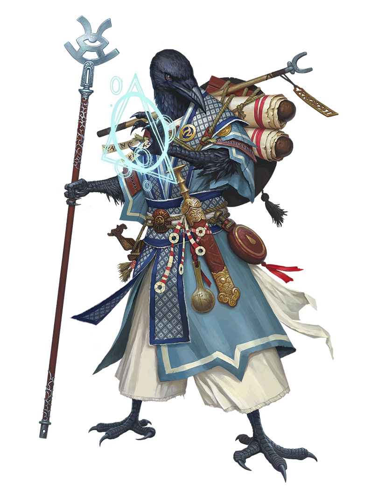

Archives of Nethys



Source Player Core 2 pg. 128
Your conduit to divine power eschews the traditional channels of prayer and servitude—you instead glean sacred truths and great mysteries embodied in overarching concepts, whether because you perceive the common ground across multiple deities or circumvent their power entirely. You explore one of these mysteries and draw upon its power to cast miraculous spells, but that power comes with a terrible price: a curse that grows stronger the more you draw upon it, which you might uphold as an instrument of the divine or view as punishment from the gods.
Key Attribute: CHARISMA
At 1st level, your class gives you an ability boost to Charisma.
Hit Points: 8 plus your Constitution modifier
You increase your maximum number of HP by this number at 1st level and every level thereafter.
Roleplaying the Oracle
During Combat Encounters...
You draw upon your mystery to empower yourself in combat, balancing miraculous effects with the increasing severity of your curse as conflicting divine demands overtax your physical body. You cast spells to aid your allies and devastate your foes, or depending on your mystery, you might wade into battle yourself.During Social Encounters...
You rely upon the insights drawn from your mystery. You might leverage your curse to intimidate people or hide its effects to better blend in.While Exploring...
You recenter yourself to bring the terrible metaphysical conflicts causing your curse back under control so you can draw upon your mystery's power again later. You remain aware of supernatural forces acting around you, perhaps peeking into the future to gain insights.In Downtime...
You might seek to learn more about your mystery and the divine wellsprings that fuel your power. Associating with others interested in the subject of your mystery can make it easier to live with your curse. You could associate with an organized religion or even start your own faithful following devoted to your mystery.You Might...
- View your oracular powers as a blessing, a curse, or both.
- Push yourself to the limits of what you can withstand to work great acts of magic.
- Rely on magical items to provide a pool of safer and more reliable magic.
Others Probably...
- Don't realize your spellcasting draws upon divine power and instead believe you command stranger—and possibly evil—powers.
- Assume you performed some terrible transgression to become cursed by the gods.
- Admire your determination and the sacrifices you make to perform wondrous acts.
Initial Proficiencies
At 1st level, you gain the listed proficiency ranks in the following statistics. You are untrained in anything not listed unless you gain a better proficiency rank in some other way.Perception
Trained in PerceptionSaving Throws
Trained in FortitudeTrained in Reflex
Expert in Will
Skills
Trained in ReligionTrained in one or more skills determined by your mystery
Trained in a number of additional skills equal to 3 plus your Intelligence modifier
Attacks
Trained in simple weaponsTrained in unarmed attacks
Defenses
Trained in light armorTrained in unarmored defense
Class DC
Trained in oracle class DCSpells
Trained in spell attack modifierTrained in spell DC
Class Features
You gain these features as a Oracle. Abilities gained at higher levels list the levels at which you gain them next to the features' names.Ancestry and Background
In addition to the abilities provided by your class at 1st level, you have the benefits of your selected ancestry and background.Attribute Boosts
In addition to what you get from your class at 1st level, you have four free boosts to different attribute modifiers.At 5th level and every 5 levels thereafter, you get four free boosts to different attribute modifiers. If an attribute modifier is already +4 or higher, it takes two boosts to increase it; you get a partial boost and must boost that attribute again at a later level to increase it by 1.
Initial Proficiencies
At 1st level, you gain a number of proficiencies that represent your basic training, noted at the start of this class.Oracle Spellcasting
You have an unfiltered connection to the great powers of the universe and the planes beyond, and you can let this power spill forth in the form of divine magic. You are a spellcaster, and you can cast spells of the divine tradition using the Cast a Spell activity. As an oracle, when you cast spells, your incantations may spill from your lips rapidly as you speak in tongues or intone in a voice not quite your own, and your gestures might be wild and unrestrained as religious ecstasy briefly touches your mind.Each day, you can cast up to three 1st-rank spells. You must know spells to cast them, and you learn them via the spell repertoire class feature. The number of spells you can cast each day is called your spell slots.
As you increase in level as an oracle, your number of spells per day increases, as does the highest rank of spells you can cast, as shown on the Oracle Spells per Day table.
Some of your spells require you to attempt a spell attack to see how effective they are, or have your enemies roll against your spell DC (typically by attempting a saving throw). Since your key attribute is Charisma, your spell attack modifiers and spell DCs use your Charisma modifier.
Heightening Spells
When you get spell slots of 2nd rank and higher, you can fill those slots with stronger versions of lower-rank spells. This increases the spell's rank, heightening it to match the spell slot. You must have a spell in your spell repertoire at the rank you want to cast in order to heighten it to that rank. Many spells have specific improvements when they are heightened to certain ranks. The signature spells class feature lets you heighten certain spells freely.Cantrips
Some of your spells are cantrips. A cantrip is a special type of spell that doesn't use spell slots. You can cast a cantrip at will, any number of times per day. A cantrip is automatically heightened to half your level rounded up— this is usually equal to the highest rank of oracle spell slot you have. For example, as a 1st-level oracle, your cantrips are 1st-rank spells, and as a 5th-level oracle, your cantrips are 3rd-rank spells.Spell Repertoire
The collection of spells you can cast is called your spell repertoire. At 1st level, you learn two 1st-rank divine spells of your choice and five divine cantrips of your choice. You choose these from the common spells on the divine list or from other divine spells to which you have access. You can cast any spell in your spell repertoire by using a spell slot of an appropriate spell rank.You add to this spell repertoire as you increase in level. Each time you get a spell slot (see the Oracle Spells per Day table), you add a spell to your spell repertoire of the same rank. At 2nd level, you select another 1st-rank spell; at 3rd level, you select two 2nd-rank spells, and so on. When you add spells, you might add a higher-rank version of a spell you already have, so you can cast a heightened version of that spell.
Your spell slots and the spells in your spell repertoire are separate. If a feat or other ability adds a spell to your spell repertoire, it wouldn't give you another spell slot, and vice versa.
Swapping Spells In Your Repertoire
As you gain new spells in your repertoire, you might want to replace some of the spells you previously learned. Each time you gain a level and learn new spells, you can swap out one of your old spells for a different spell of the same rank. This spell can be a cantrip. You can also swap out spells by retraining during downtime.Mystery
An oracle wields divine power, but not from a single divine being. This power could come from a potent concept or ideal, the attention of multiple divine entities whose areas of concern all touch on that subject, or a direct and dangerous conduit to raw divine power. This is the oracle's mystery, a source of divine magic not beholden to any deity.Choose the mystery that empowers your magic. Your mystery grants you additional spells, and special focus spells called revelation spells. Your mystery also gives you a unique cursebound ability that lets you draw upon the divine, as well as dictating the effects of the oracular curse that falls upon you when you touch too much of this power.
The list of oracle mysteries can be found here
Revelation Spells
The powers of your mystery manifest in the form of revelation spells. Revelation spells are a type of focus spell. It costs 1 Focus Point to cast a focus spell. You refill your focus pool during your daily preparations, and you can regain 1 Focus Point by spending 10 minutes using the Refocus activity to search for omens in a way befitting your mystery, like gazing into a fire, throwing bones and seeing how they fall, or meditating to hear the voices of those who came before you.Focus spells are automatically heightened to half your level rounded up, much like cantrips. Focus spells don't require spell slots, and you can't cast them using spell slots. Certain feats give you more focus spells.
The maximum Focus Points your focus pool can hold is equal to the number of focus spells you have, but it can never be more than 3 points.
You learn a revelation spell at 1st level and start with a focus pool of 1 Focus Point. This spell is an initial revelation spell determined by your mystery. You can learn additional revelation spells through oracle feats.
Oracular Curse
As an oracle, you can tap into the pure and unmitigated divine power of creation to supplement your spellcasting via cursebound abilities. These abilities grant you special benefits, but the backlash of letting this power into your mortal body manifests as an oracular curse. The more cursebound abilities you use, the more your curse worsens, but you might gain divine benefits even as it tightens its grip on your soul.Your oracular curse is expressed using the cursebound condition, a unique condition that affects only oracles. Immediately after the first time you use a cursebound ability, you become cursebound 1, and if you use a cursebound ability while you are already cursebound, you increase the value of your cursebound condition by 1 after the ability resolves. At lower levels, you can tolerate only a modest amount of divine power, and your cursebound condition can't increase beyond cursebound 2; as you grow in levels, you can open yourself to even more power and your cursebound condition can progress to 3 and finally 4. Once saturated in divine power, your soul can't absorb any more, and so you can't use a cursebound ability if you are already at your maximum cursebound condition.
Your oracular curse lists the specific effects of being cursebound, which are cumulative as your curse progresses. You remain cursebound until you Refocus, which reduces your cursebound condition by 1 in addition to restoring a Focus Point. As your curse is a direct result of divine power, you cannot mitigate, reduce, or remove the effects of your curse or any ability with the cursebound trait by any means other than Refocusing. For example, if a cursebound effect makes creatures concealed from you, you can't negate that concealed condition through a magic item or spell, such as sure strike (though you would still benefit from the other effects of that item or spell). Likewise, cleanse affliction and similar abilities don't affect your curse at all.
At 1st level, you gain a cursebound oracle feat determined by your mystery, and you can learn additional cursebound abilities through oracle feats.
Oracle FeatsLevel 2
At 2nd level and every 2 levels thereafter, you gain an oracle class feat.Skill FeatsLevel 2
At 2nd level and every 2 levels thereafter, you gain a skill feat. You must be trained or better in the corresponding skill to select a skill feat.General FeatsLevel 3
At 3rd level and every 4 levels thereafter, you gain a general feat.Signature SpellsLevel 3
Experience enables you to cast some spells more flexibly. For each spell rank you have access to, choose one spell of that rank to be a signature spell. You don’t need to learn heightened versions of signature spells separately; instead, you can heighten these spells freely. If you’ve learned a signature spell at a higher rank than its minimum, you can also cast all its lower-rank versions without learning those separately. If you swap out a signature spell, you can replace it with any spell you could have chosen when you first selected it (i.e., of the same spell rank or lower). You can also retrain specifically to change a signature spell to a different spell of that rank without swapping any spells; this takes as much time as retraining a spell normally does.Skill IncreasesLevel 3
At 3rd level and every 2 levels thereafter, you gain a skill increase. You can use this increase to either become trained in one skill you're untrained in, or become an expert in one skill in which you're already trained.At 7th level, you can use skill increases to become a master in a skill in which you're already an expert, and at 15th level, you can use them to become legendary in a skill in which you're already a master.
Ancestry FeatsLevel 5
In addition to the ancestry feat you started with, you gain an ancestry feat at 5th level and every 4 levels thereafter.Expert SpellcasterLevel 7
The intricacy of your divine power has grown clearer over time. Your proficiency ranks for spell attack modifier and spell DC increase to expert.Mysterious ResolveLevel 7
The power of your mystery blazing in your soul makes it harder for other powers to grip your mind. Your proficiency rank for Will saves increases to master. When you roll a success on a Will save, you get a critical success instead.Magical FortitudeLevel 9
Magical power has improved your body’s resiliency. Your proficiency rank for Fortitude saves increases to expert.Divine AccessLevel 11
Your mystery offers you strange access to spells typically reserved for more conventional worshippers. Choose one deity who grants one of your mystery’s granted domains. Add up to three cleric spells of your choice granted by that deity to your spell list, and to your spell repertoire as soon as you can cast spells of the appropriate rank.Major CurseLevel 11
You’ve learned to better tolerate the conflicting powers wreaking havoc on your body. The maximum cursebound value you can have increases from cursebound 2 to cursebound 3.Oracular SensesLevel 11
You have always been able to sense a bit more than others. Your proficiency rank for Perception increases to expert.Weapon ExpertiseLevel 11
You’ve dedicated yourself to learning the intricacies of your weapons. Your proficiency ranks for simple weapons and unarmed attacks increase to expert.Light Armor ExpertiseLevel 13
You’ve learned how to dodge while wearing light or no armor. Your proficiency rank for light armor and unarmored defense increases to expert.Premonition’s ReflexesLevel 13
A chill runs through your spine as danger strikes, giving you a hair’s more time to dodge or cover yourself. Your proficiency rank for Reflex saves increases to expert.Weapon SpecializationLevel 13
You’ve learned how to inflict greater injuries with the weapons you know best. You deal 2 additional damage with weapons and unarmed attacks in which you are an expert. This damage increases to 3 if you’re a master and 4 if you’re legendary.Master SpellcasterLevel 15
You truly understand the deep and complex divine power within your mystery. Your proficiency ranks for spell attack modifiers and spell DCs increase to master.Extreme CurseLevel 17
You have mastered a precarious balance between the conflicting divine powers of your mystery, allowing you to tolerate a perilous degree of divine curse. The maximum cursebound value you can have increases from cursebound 3 to cursebound 4.Greater Mysterious ResolveLevel 17
Your time spent in contemplation of the mysteries of creation has given you a powerful mind and soul. Your proficiency rank for Will saves increases to legendary. When you roll a success on a Will save, you get a critical success instead. When you roll a critical failure on a Will save, you get a failure instead. When you fail a Will save against a damaging effect, you take half damage.Legendary SpellcasterLevel 19
You can harness divine power at a level few others can match. Your proficiency ranks for spell attack modifiers and spell DCs increase to legendary.Oracular ClarityLevel 19
You now fully grasp the nature of the divine power behind your mystery, allowing you to work magic akin to miracles. Add two common 10th-rank divine spells to your repertoire. You gain a single 10th-rank spell slot you can use to cast one of those two spells using oracle spellcasting. You don’t gain more 10th-rank spells as you level up, unlike other spell slots, and you can’t use 10th-rank slots with abilities that give you more spell slots or that let you cast spells without expending spell slots. You can take the Oracular Providence feat to gain a second slot.Shelyn's Corner
×Classic Feel
Classic Feel
Classic Feel
The classic look for the Archives of Nethys.
| Table |
| Data |
| More Data |
Book Feel
Book Feel
Book Feel
An alternative feel, based on the Rulebooks.
| Table |
| Data |
| More Data |
Round Feel
Round Feel
Round Feel
A rounded, modern look for the archives.
| Table |
| Data |
| More Data |
Slim Feel
Slim Feel
Slim Feel
A variant of the Round feel, more compact.
| Table |
| Data |
| More Data |